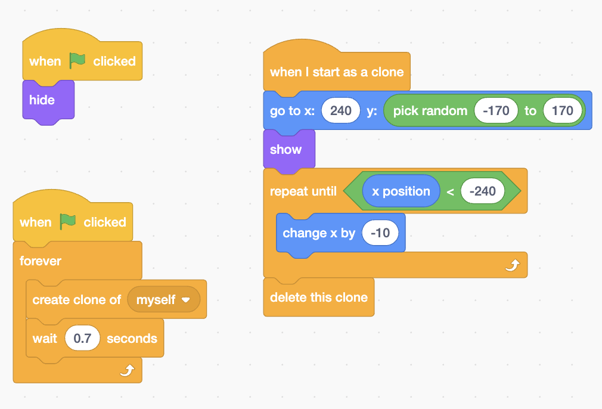

Teaching Pedagogy
Lesson objectives
What we are learning
- Create clones to spawn repeated asteroids.
- Position sprites with go to x/y; move with change x by.
- Control with repeat until using x position < −240.
- Explain how cloning saves time vs. many sprites.
Success criteria
What great looks like
- Asteroids appear continuously at random heights.
- They move left and delete when off‑screen.
- You can describe the clone pattern from memory.
Vocabulary
Words coders use
- Sprite — object/character.
- Script — stack of blocks.
- Clone — fast copy made by code.
- Event — start signal (green flag).
- Loop — do it again and again.
- Condition — test, e.g. x position < −240.
Teacher moves
Running the room
- Pairs share one keyboard; swap driver every 5 minutes.
- One student volunteer models actions while the class builds along.
- Use “small steps → test”: press the flag after each block stack.
Typical questions
Check understanding
- Where do clones start and why use pick random for y?
- What happens if wait = 0.2 or 1.2?
- What breaks without delete this clone?
- Why not touching edge? here?
What it’s like to be a coder
Coder mindset
- Talk in blocks: “Events → flag; Control → repeat until …”.
- Read clues: nothing shows → check show/green flag.
- Debug calmly: change one thing, test, repeat.
Step‑by‑Step Guide
Colour‑matched to Scratch
1Delete the cat → choose a rock → rename to Asteroid.
2Events when green flag clicked → Looks hide
3New script: Events when green flag clicked → Control forever → inside add create clone of myself then wait 0.7 seconds.
4New script: Control when I start as a clone → Motion go to x: 240 y: pick random −170 to 170 → Looks show.
5Control repeat until (x position < −240) → inside add Motion change x by −10 → after loop add Control delete this clone.
Why not touching edge? Starting at x=240 often counts as “touching” and skips movement. The x position test waits until the clone moves off‑screen.
Visual reference
Blocks at a glance

Troubleshoot & Extend
Fast fixes
- See nothing? Add show in the clone script and press the flag.
- Clones vanish? Use x position < −240 (not touching edge?).
- Laggy? Add delete this clone after the loop.
- Same height? Put pick random −170 to 170 in the y slot.
Wow moments
For early finishers
- Add a Score variable and +1 when a laser hits an asteroid.
- Increase speed every 10 points (use a speed variable).
- Change costume each spawn for visual variety.
- Add a Lives variable and end the game when it reaches 0.
Tip: project in Presenter Mode for bigger text. This layout keeps the pedagogy up top and the step‑by‑step with a visual reference just below.